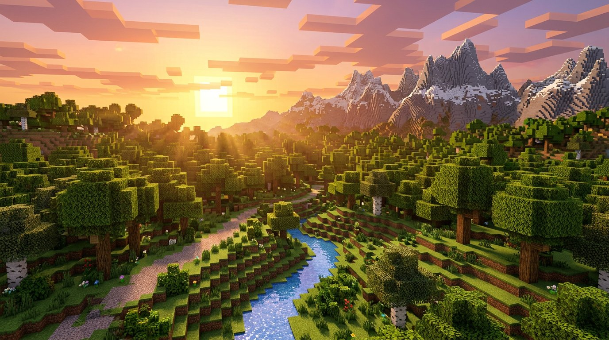

Instant Play
No installs, no accounts, no setup. Click play and you are in a world within seconds — everything runs client-side.
SINGLE-FILE BROWSER CLIENT
A full Eaglercraft-style Minecraft experience packed into one HTML file. Play it right here in your browser — or download the file and run it anywhere, even offline.
▶ PLAY*With the downloaded file. Multiplayer needs a connection, obviously.

WHY FORESTX
No installs, no accounts, no setup. Click play and you are in a world within seconds — everything runs client-side.
The entire client — engine, assets, sounds and WASM — bundled into a single forestx.html you can store anywhere.
Connect to Eaglercraft-compatible WebSocket servers and play with friends, just like the desktop experience.
Save the file to a USB stick or your desktop and launch it with a double click. No internet required after download.
Survival and creative modes, worlds saved in your browser, sound packs and resource assets all included.
One file means one link. Send it to a friend, host it on a school drive, or drop it on any static host.
GET THE FILE
The download is the exact same client you play here — one portable HTML file that runs from anywhere, no web server needed.
Grab forestx.html — a single ~86 MB file, nothing else to install.
Desktop, USB stick, school folder — the file is fully self-contained.
Open it in any modern browser. Worlds are saved locally in browser storage.
CONTROLS
Click the game once to capture your mouse — ESC releases it.
Move
Jump
Sneak
Sprint
Mine / attack
Place / use
ForestX menu — Look · HUD · Tools (Esc first, then F8)
Release mouse / pause
QUESTIONS
Yes. Engine, textures, sounds and the WASM runtime are all bundled into a single forestx.html (~86 MB). No installers, no launcher.
Neither. Hit Play and you are in. Downloading is only for keeping a portable, offline copy.
Once the file is saved, singleplayer runs fully offline in any modern browser, Chromebooks included. Multiplayer still needs a connection.
In your browser's local storage, on the device and browser you played in. Clearing browser data can delete them.
ForestX connects to Eaglercraft-compatible servers over WebSocket (wss://…). Add a server address in the in-game multiplayer menu and join.